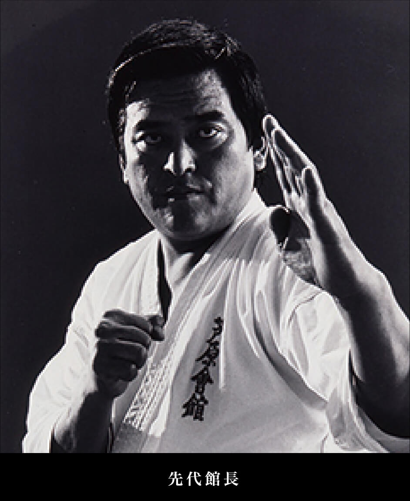
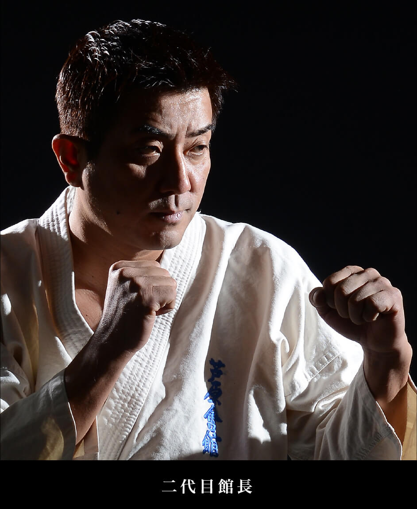

芦原会館とは


芦原会館の歴史
劇画「空手バカ一代」の登場人物として知られる故・芦原英幸。“ケンカ十段”の異名を取った伝説的な空手家が 単身四国に渡り、1980年9月に極真会館から独立して創設したのが「新国際空手道連盟 芦原会館」です。 故・芦原英幸は初代館長として、自らが生み出した実践的かつ誰にでも楽しめる新しい空手を広め、 世界中に多くの門弟を持つ組織に育成。現在は初代の長男である芦原英典館長が遺志を引き継ぎ、 芦原カラテのさらなる普及発展のために力を尽くしています。
サバキとは
サバキとは、今までの空手の、殴り合って力の強い方が勝つというイメージから、 より合理的にトレーニングをして全身の機能を高めたものが勝つという 空手に変えるために生まれた、芦原カラテ独自の「空手」のことである。 より安全に、打たれずに打つ、倒されずに倒すための動き方でもある。
芦原会館 道場訓
一、礼節を忘れないこと
一、努力精進を怠らないこと
一、心技の向上を図ること
一、チャレンジ精神を持ち続けること
一、常に反省を忘れないこと
一、より正しい空手の道を全うすること
基本とする目標
より正しく（フォームバランス
より速く（スピードアップ）
より力強く（パワーアップ）
より高く（ハイテクニック）